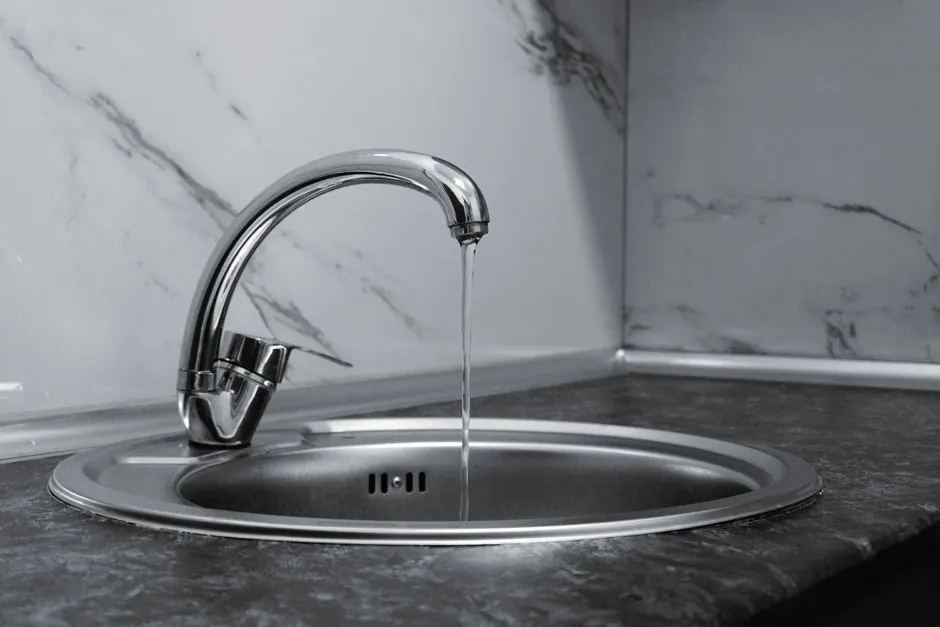
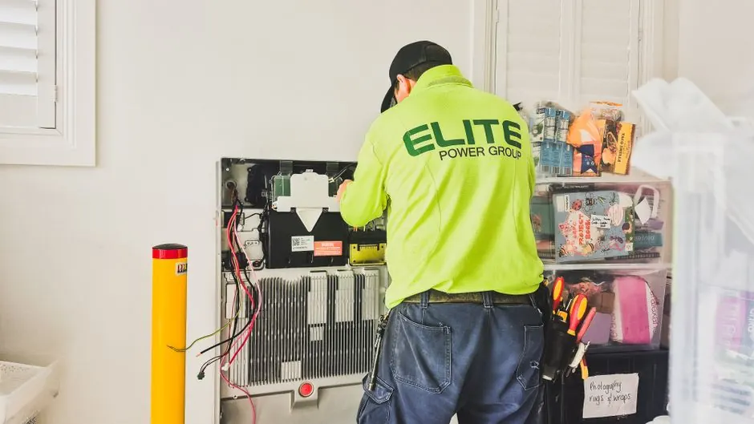

Drain Line Leak Repair
Hidden drain line leaks beneath foundation slabs and behind walls can lead to soil erosion, foundation shifting, and mold growth. Our drain line leak repair specialists use acoustic listening and video cameras to find and fix leaks cleanly. To keep your whole drainage system sound, pair repairs with routine drain cleaning in Naples, FL.
Clear arrival timeUpfront optionsBacked workmanship
What's Included in Drain Line Leak Detection & Repair
Our non-invasive leak location service pinpoints underground cracks, loose fittings, and under-slab pipe separations before any digging begins.
Acoustic & Pressure Testing
We perform hydrostatic isolation tests and acoustic sensor scans to verify if an underground drainage line is losing water.
High-Res Video Scoping
We guide a micro-camera through the line to visually identify fractures, offsets, and corroded channel seams.
Electronic Spot Mapping
Using electromagnetic sondes, we pinpoint the exact floor tile or soil location directly above the leak point.
Targeted Repair Plan
We present a clear, minimally invasive repair plan with upfront pricing before any floor or slab access is started.
Hidden Drain Line Leaks in Naples Homes
In Southwest Florida slab-on-grade homes, sanitary drain lines run deep beneath poured concrete foundations. Shifting coastal sand, corrosive groundwater, and settling ground can cause subterranean pipe joints to separate or crack.
Because wastewater escapes into surrounding soil under the foundation, drain leaks often go undetected until mold grows on baseboards, floor tiles crack, or unexplained sewer gas enters living areas. When you need dependable water leak repair under a foundation slab or behind a wall, our modern leak locating equipment finds the exact origin without destructive guesswork.

How we workWe verify the cause, compare realistic options, and confirm the repair before we leave.
Our Non-Invasive Leak Locating Process
A systematic diagnostic methodology that saves your flooring and eliminates destructive searching.
Initial Diagnostic Review
We inspect visible symptoms, examine water meter movement, and test for sewer gas traces near walls and slabs.
Hydrostatic Pressure Isolation
Inflatable test balls isolate individual drainage branches to scientifically verify which section has compromised integrity.
Camera Scoping & Sonde Tracking
We drive a digital video transmitter directly to the break and track its radio signal above ground.
Precision Depth & Spot Marking
We mark the exact depth and spot on your flooring or lawn, providing a diagram of the subsurface pipe defect.
Repair Options & Execution
We review spot repair, trenchless epoxy patch, or targeted bypass options with clear upfront pricing.
Specialized Leak Detection Equipment
Advanced diagnostic gear engineered to locate underground drainage leaks through solid concrete slabs.
Acoustic Ground Microphones
High-sensitivity audio listening sensors that pick up subsurface fluid escape frequencies through floors.
Color Inspection Cameras
Equipped with metered distance reels to measure the exact footage from cleanout to leak.
Radio-Frequency Sondes
Miniature transmitters that broadcast through concrete slabs to identify underground pipe trajectories.
Hydrostatic Isolation Plugs
Precision bladder seals that test closed drainage loops for subtle pressure decay.
Signs You Have a Hidden Drain Line Leak
Common red flags indicating compromised underground drainage piping in Collier County.

Persistent sewer gas odor
Foul, musty methane smells lingering near baseboards, utility rooms, or bathrooms without visible fixture leaks.
Cracked tiles or foundation settling
Eroded sub-slab fill soil causing hollow-sounding floor tiles or foundation shifts.
Drain Line Leak Problems We Solve
Protecting Naples residential properties from structural water damage, soil erosion, and health hazards.
Under-slab sewer line leaks
Pinpointing hidden breaks beneath concrete slabs without extensive structural excavation.
Warm spots & damp flooring
Locating cracked hot or wastewater drain lines causing moisture buildup under floors.
Persistent drain odors indoors
Detecting invisible sewer gas leaks from cracked PVC joints or corroded cast iron vents.
Pricing for Drain Line Leak Services
PRICE BEFORE WORK
Severity of the leak
Different leaks call for different time and equipment, which can change the price.
Location of the leak
Access to the line, such as under a slab or in the yard, can change the time needed.
Tools required
Different tools take different time and equipment, so the price can differ.
Frequently Asked Questions
Call +1 (239) 688 0557What causes drain line leaks in Naples?
Drain line leaks in Naples are often caused by pipe corrosion, tree root intrusion, or ground shifting. Regular maintenance can help identify these issues early.
How to detect a drain line leak in Naples?
You can detect a drain line leak by noticing wet spots in your yard, unusual increases in your water bill, or slow drainage in your sinks. Professional leak detection pinpoints the breach, and if broken pipes are found, we provide the drain pipe repair Naples, FL homeowners rely on to resolve the issue cleanly.
How much does drain line leak repair cost in Naples?
Every leak is unique depending on pipe depth, material, and accessibility. We pinpoint the breach using precision camera inspection and deliver a transparent, upfront flat-rate proposal before beginning any repair.
How long does drain line leak repair take?
The time needed depends on line depth, pipe material, and access. We inspect the line first and go over the plan before work starts.
Related Services

Sewer Cleaning
Sewer cleaning clears the line that carries waste from your home to the city main or septic system.
Clogged Drain Clearing
Clearing the blockage restores flow through fixtures and indoor drains.
Drain Snaking and Cabling
A motorized cable breaks up stubborn clogs to restore flow.Need Drain Line Leak Services in Naples?
Call us and tell us what you are seeing. We will tell you the next open time and what to do while you wait.

Request leak inspection
Call or email us about a clogged drain or a sewer backup. We reply as soon as we can.